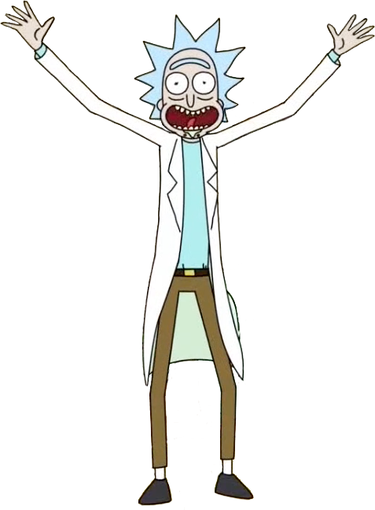
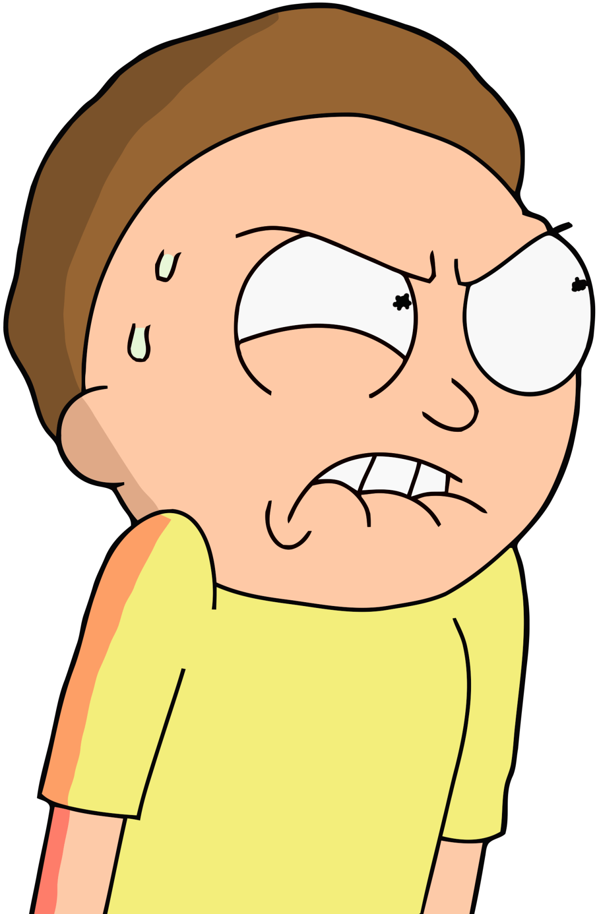
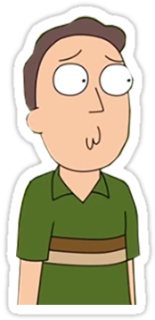
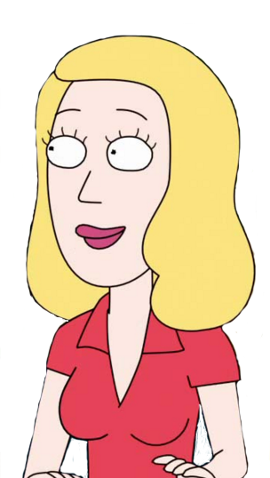

Originalmente os criadores fizeram o desenho inspirado na Franquia “De Volta Para o Futuro”, eles queriam fazer uma sátira à franquia criada por Robert Zemeckis, porém a zueira ficou muito mais seria e os criadores acabaram expandindo o universo e a história do desenho fazendo Rick e Morty percorrer viagens interdimensionais.
Nunca foi revelado o que Rick costuma tomar em seu cantil, apenas vemos ele dando vários goladas em sua garrafa, no desenho podemos ver que Rick é um viciado em drogas podendo fazer qualquer mistura ou droga intergaláctica com facilidade, Dan Harmon (um dos criadores da série) já falou que no cantil de Rick contém apenas Vodka e nada de mais.
O episódio piloto de Rick And Morty foi feito em apenas 6 horas, após Harmon e Roiland conseguir vender o nome da série eles ficaram com o prazo muito apertado e teve que começar a trabalhar imediatamente na série.
Rick and Morty já deram as caras em Os Simpsons, os criadores foram convidados a fazer um Crossover onde eles colocam os dois personagens da série para aparecer durante a abertura e matar a família Simpson atropelado com sua nave.
Além de Justin Roiland ser um dos criadores da série ele também faz parte do elenco de dublagem, ele empresta sua voz a dois personagens sendo eles Rick e Morty.
Rick and Morty vive diversas aventuras intergalácticas durante os episódios, no desenho é dito que existe um número infinito de realidades e universos, porém o universo que mais acontecem as histórias é o da dimensão C-137.
PERSONAGENS

Rick Sachez
é o protagonista, co-personagem título e principal protagonista de Rick e Morty. Ele é um cientista genial, cujo alcoolismo e comportamento imprudente e niilista são motivo de preocupação para a família de sua filha, bem como a segurança de seu neto, Morty. Ele é interpretado por Justin Roiland.

Morty
Embora se tenha bastante informação sobre Morty, a vida passada do mesmo nunca foi muito explorada na série. Atualmente Morty tem 14 anos e desde o início da série, Rick Sanchez havia desaparecido misteriosamente por um período de 14 anos. Não se sabe se o parto de Morty e o desaparecimento de Rick estão ligados um ao outro, mas foi mostrado em duas ocasiões que Rick já conhecia Morty quando ele era apenas um bebê. No episódio "Close Rick-Counters of the Rick Kind", uma das lembranças felizes de Rick sobre Morty foi pegá-lo ainda como bebê. No episódio "Get Schwifty", uma foto na parede de Birdperson mostrava Rick segurando um bebê, que apesar de ter uma identidade imprecisa, era muito provavelmente Morty na mesma idade. No episódio "Raising Gazorpazorp", Beth admitiu acidentalmente que quando Morty era um bebê, Jerry passou todas as suas ignorâncias ao Morty, transformando-o no covarde apreensivo que é hoje.

Jerry
Jerry é o marido de Beth Smith, pai de Summer Smith e Morty Smith, e genro de Rick Sanchez e Sanchez / Diane Sanchez, ele também é filho de Leonard Smith e Joyce Smith, e do sobrinho. do Tio Anônimo, ele atualmente atua como pai e genro de Morty Smith e Rick Sanchez da Dimensão C-137, respectivamente. Ele compartilha a mesma história de seu homólogo C-137 até o desastre de Cronenberg, onde foi evitado em sua dimensão.
Jerry sempre tenta pensar no melhor interesse da família, mas sua tentativa de ser o patriarca da família muitas vezes pode ser equivocada por sua natureza autocentrada. Isso faz com que ele tenha um grande conflito com Rick, já que seu sogro claramente não tem nenhum respeito por ele
Summer
Summer Smith é filha de Jerry Smith e Beth Smith, a irmã mais velha de Morty Smith, a neta de Rick Sanchez. Ela atualmente atua como a irmã mais velha e neta do Morty e Rick da Dimensão C-137. Ela é o único outro membro da Família Smith a estar ciente desse fato.

Beth
Beth Smith (née Sanchez) é a filha de Rick Sanchez e Sra. Sanchez / Diane Sanchez, a esposa de Jerry Smith, e mãe de Summer Smith e Morty Smith, ela também é a nora de Leonard Smith e Joyce Smith e a neta de Rick's Father e uma mulher não nomeada. Ela atualmente atua como a mãe e a filha de Morty Smith e Rick Sanchez da Dimensão C-137, respectivamente. Atualmente trabalha como veterinária no Hospital St. Equis. Beth Smith é uma cirurgiã de cavalos, seu grande sonho era ser uma cirurgiã humana, como ela disse na TV interdimensional quando viu sua outra realidade "Eu estou fazendo uma cirurgia, mas não em um cavalo em um humano" disse Beth então Jerry disse " esse é o seu sonho "eles tiveram uma discussão sobre esse verão é a causa de não eles chegarem lá sonhos.
Caracterizada por um complexo de superioridade e problemas de abandono, Beth gradualmente passou a debater-se com o marido sobre suas contribuições para o casamento, em parte devido à sua posição de nível inferior e subseqüente emprego, ainda mais influenciada por seu pai. Desde o divórcio, ela se concentrou em criar seus dois filhos. No entanto, no final ela decide se reconectar com Jerry e eles estão vivendo juntos com seus filhos e seu pai.